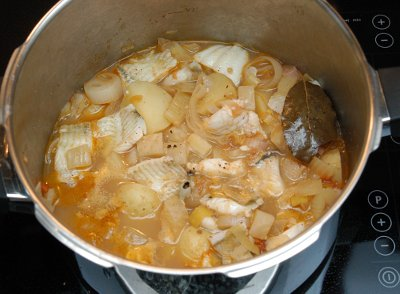

| Zutaten: | |
| 2 | Zwiebeln |
| 1 | Lauch |
| 2 | Fenchel |
| 1 | Sellerie |
| 2 | Tomaten |
| 3 | Knoblauchzehen |
| 8 | kleine Kartoffeln |
| Olivenöl | |
| 10 | weisse Pfefferkörner |
| 1 | Lorbeerblatt |
| 800 g | Fischfilets |
| Pfeffer | |
| Salz | |
| Muskatnuss | |
| 1 | Zitrone (für den Saft) |
| 1 dl | Weisswein |
| 5 dl | Bouillon |
Die Zwiebeln in Ringe schneiden.
Den Lauch in Rädchen schneiden.
Den Fenchel in Würfel schneiden.
Die Sellerie in Würfel schneiden.
Die Tomaten in Würfel schneiden.
Die Knoblauchzehen fein hacken.
Die Kartoffel schälen und halbieren.
Bouillon zubereiten.
In der Pfanne das Gemüse im Olivenöl andämpfen. Anschliessend mit dem Weisswein ablöschen.
Bouillon und Gewürze (Pfefferkörner, Lorbeerblatt, Muskat) beigeben und alles ca. 40 Minuten leicht köcheln lassen. (Alternativ 11 Minuten im Dampfkochtopf, 2. Ring)
Fischfilet mit Salz, Pfeffer und Zitronensaft würzen. 5 Minuten vor dem Servieren den Fisch in die Bouillon geben und sanft ziehen lassen.
unbekannt
Ich habe das Ausprobieren dieses Rezeptes ewig vor mich hergeschoben da ich eigentlich nur schlechte Pot-au-Feus gegessen habe. Aber eben, wenn man in einer Turnhalle mit einer Minestrone versorgt wird ist halt schon nicht dasselbe. Nun, ich war sehr positiv überrascht und gebe dem Gericht Höchstnoten. RE 30.7.2009
Es hat im Januar 2013 auch wieder sehr gut gemundet, diesmal mit Lachsfilet.
@LINKBACK_TAG@ @WAKELOCK@